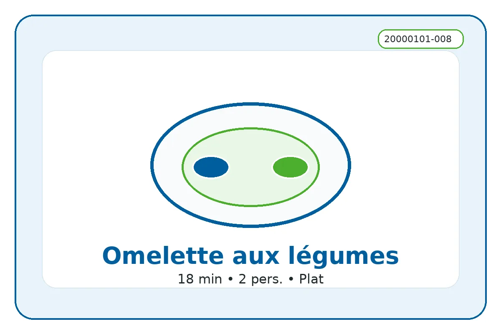

ID recette : 20000101-008
Omelette aux légumes
Une omelette aux légumes souple et colorée, idéale pour transformer quelques légumes restants en repas complet.
Les légumes doivent être précuits avant d’ajouter les œufs, afin d’éviter une omelette aqueuse. La cuisson douce permet de garder une texture moelleuse.

🧭 Repères alimentaires
Repères indicatifs à vérifier selon les marques, les remplacements d’ingrédients et les produits réellement utilisés.
🔥 Cuisson indicative
Poêle : 6 à 8 min à feu doux/moyen pour garder l’omelette moelleuse.
Ces valeurs sont indicatives : ajuster selon le four, l’épaisseur du plat et la coloration souhaitée.
⚖️ Adapter les quantités
Le calcul adapte les quantités proportionnellement. Les valeurs nutritionnelles restent calculées sur les quantités de base.
🧺 Ingrédients avec quantités
Principaux
- 4 pièces — œufs
- 250 g — légumes cuits ou crus
Secondaires
- 1 c. à soupe — huile ou beurre
- 2 c. à soupe — lait ou crème
- 1 pincée — sel et poivre
Optionnels
- 50 g — fromage
- 1 c. à café — herbes
- 150 g — pommes de terre cuites
👩🍳 Préparation détaillée
- Laver et couper les légumes en petits dés ou fines lamelles.
- Faire revenir l’oignon ou l’échalote dans une poêle avec un peu d’huile, puis ajouter les légumes les plus longs à cuire.
- Cuire les légumes 5 à 10 minutes, jusqu’à ce qu’ils soient tendres et que l’eau de végétation soit évaporée.
- Battre les œufs avec sel, poivre, herbes et éventuellement un peu de lait ou de crème.
- Verser les œufs sur les légumes. Cuire à feu doux jusqu’à ce que l’omelette soit prise mais encore moelleuse.
💡 Astuce anti-gaspi
Les petits restes de légumes cuits sont parfaits : les réchauffer rapidement avant d’ajouter les œufs.
🔁 Variantes possibles
Ajouter fromage râpé, dés de pommes de terre cuites, champignons, poivrons, courgettes, tomates, herbes fraîches ou une pointe de curry. Servir dans du pain pour un sandwich chaud.
🔎 Rechercher cette recette sur Google
🔗 Sources d’inspiration
Liens utilisés pour comparer les techniques, les variantes et les temps de préparation. La fiche reste reformulée et adaptée au projet.
📊 Valeurs nutritionnelles estimées
Estimation indicative. Les valeurs ci-dessous sont calculées à partir d’ingrédients génériques et des quantités de base. Elles ne remplacent pas les étiquettes des produits, ni un avis médical ou diététique. Voir l’explication complète.
Non officiel
| Valeur | Par portion | Pour 100 g |
|---|---|---|
| Énergie | 1829 kJ / 437.1 kcal | 522 kJ / 124.7 kcal |
| Protéines | 23.1 g | 6.6 g |
| Glucides | 22.1 g | 6.3 g |
| dont sucres | 6.2 g | 1.8 g |
| Lipides | 28.6 g | 8.2 g |
| dont acides gras saturés | 15.1 g | 4.3 g |
| Fibres | 5.3 g | 1.5 g |
| Sel | 1.4 g | 0.4 g |
Portion estimée : 350 g. Score simplifié : . Indicateur estimé non officiel. Il ne correspond pas à un calcul réglementaire ni à un Nutri-Score officiel.
⚠️ Allergènes et conservation
Allergènes : Œufs, Lait
Conservation : À conserver 24 h au réfrigérateur dans une boîte fermée.
Réchauffage : À réchauffer doucement si nécessaire.
Vérifiez toujours les étiquettes des produits utilisés.
🔎 Filtres associés
Cliquez sur un bouton pour trouver les recettes associées au même champ.
Sous-catégorie : Omelette
Moment du repas : Dejeuner Diner
Équipement : Poele
Repères alimentaires : Sans porc Végétarien Contient œuf Sans gluten possible
📱 QR code
QR code vers la fiche en ligne.
https://recettesducoeur.github.io/recettes/20000101-008.html
Sur mobile/tablette, seul le téléchargement PDF est proposé. Sur PC, l’impression conserve les quantités sélectionnées.